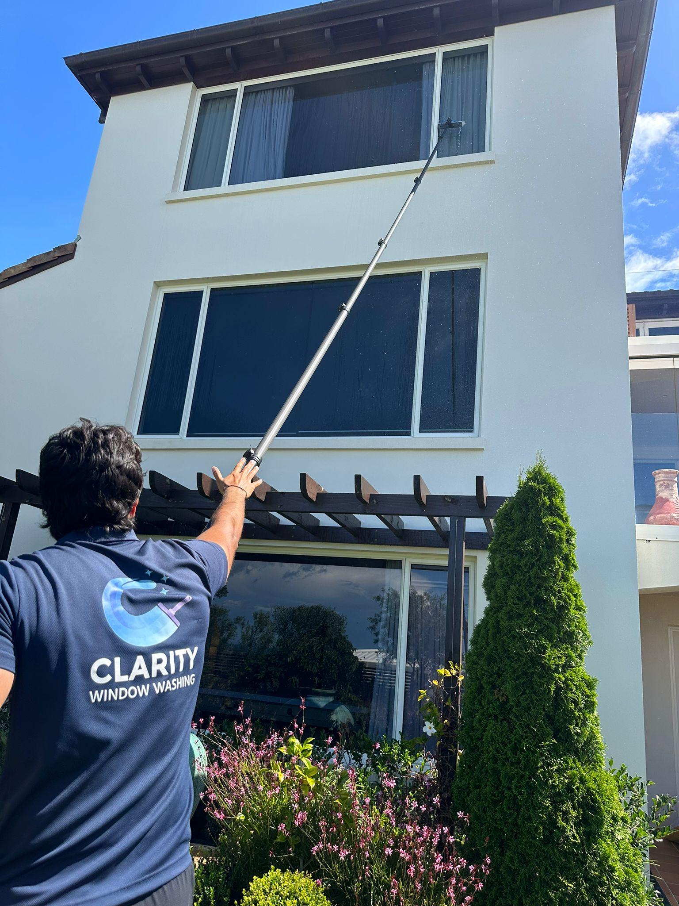

Homes
Residential window cleaning
From single-level homes to taller properties, Clarity cleans exterior and interior glass with careful setup and tidy pack-down.
- Exterior-only, interior-only, or both
- Upper-storey window access
- Frames, sills, and glass finished neatly